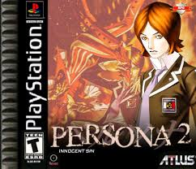
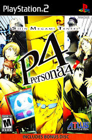

The Persona video game series, developed by Atlus a subsidiary of SEGA, is a spin-off of the larger Shin Megami Tensei franchise, blending traditional role-playing mechanics with elements of social simulation and life simulation. The series is known for its unique gameplay structure, where players balance the daily life of a high school student with exploring dungeons and battling supernatural enemies. Players navigate relationships, manage time between school, extracurricular activities, and socializing, all while uncovering mysteries related to otherworldly threats. The series explores themes such as identity, self-acceptance, and the complexities of human emotions, making it deeply narrative-driven.
Major Games
Revelations: Persona
The first Persona game, originally released in 1996 as Shin Megami Tensei: Persona in Japan, introduces players to a group of high school students who awaken to the ability to summon "Personas" — manifestations of their inner selves — after a mysterious event triggers the appearance of a hidden realm called the "Dark Hour." Set in the fictional city of Mikage-cho, the students must navigate both the dangers of this supernatural world and their everyday lives, forming bonds with their classmates while uncovering dark secrets about the realm and the events that led to its emergence. The game blends dungeon exploration, turn-based combat, and social simulation, marking the beginning of the series' focus on psychological themes, personal growth, and the balance between the mundane and the extraordinary. Although it was released in Japan and later remade for the PSP in 2009, the game laid the foundation for the signature mechanics that would define future Persona titles.
Persona 2: Innocent sin
Persona 2: Innocent Sin, released in 1999 for the PlayStation, follows high school student Tatsuya Suou and his friends as they confront a bizarre phenomenon in the city of Sumaru, where rumors are mysteriously becoming reality. The group becomes entangled in a conflict involving an enigmatic figure known as the Joker and a shadowy cult aiming to resurrect an ancient malevolent deity. As they awaken their Persona abilities, the characters must unravel the truth behind the rumors, face traumatic events from their pasts, and confront the darker aspects of themselves. The game deepens the series’ focus on psychological and philosophical themes, such as the power of belief, collective consciousness, and the lasting impact of memory and trauma, making it one of the most narratively complex entries in the franchise.
Persona 2: Eternal Punishment

Persona 2: Eternal Punishment, the direct sequel to Innocent Sin, shifts focus to Maya Amano, a journalist investigating a new wave of reality-altering rumors in Sumaru City. Set in an alternate timeline where the events of Innocent Sin were erased from memory, the game explores the consequences of those lost events as Maya and her allies, including returning characters, confront a new incarnation of the Joker and a deeper conspiracy involving fate, free will, and the nature of sin. As the characters awaken their Personas and delve into their own regrets and unresolved trauma, Eternal Punishment presents a mature, emotionally layered story that challenges players with moral ambiguity and philosophical questions. The game completes the Persona 2 duology, delivering a darker, more introspective narrative that further solidifies the series’ reputation for complex storytelling.
Persona 3

Persona 3, released in 2006, marks a major evolution in the series, blending traditional dungeon-crawling RPG mechanics with a daily life simulation set in a modern Japanese high school. The story follows a silent protagonist who transfers to Gekkoukan High School and becomes involved with SEES (Specialized Extracurricular Execution Squad), a group of students fighting mysterious creatures called Shadows during a hidden hour of the day known as the "Dark Hour." Using their Personas—summoned through an intense ritual involving evoker devices—the group explores a massive tower called Tartarus while unraveling the truth behind the Dark Hour, the nature of death, and humanity’s struggle with existential despair. Persona 3 introduced the Social Link system and a darker, more philosophical tone that redefined the series, earning it critical acclaim and a lasting legacy as one of the most influential JRPGs of its time.
Persona 4
Persona 4, released in 2008, follows a group of high school students in the rural town of Inaba who become entangled in a series of mysterious murders linked to a strange alternate world inside television screens. The protagonist, a transfer student, discovers the power to summon Personas and joins forces with classmates to investigate the “Midnight Channel,” a supernatural realm where people’s hidden feelings manifest as dangerous Shadows. As they confront and accept their darker selves, the team grows closer, strengthening their bonds and abilities. Blending murder mystery, psychological introspection, and heartfelt character development, Persona 4 stands out for its balance of lighthearted slice-of-life moments with darker, emotional storytelling, and is celebrated for its memorable cast, catchy soundtrack, and deep themes of truth and self-acceptance.
Persona 5

Persona 5, released in 2016, centers on a high school student wrongfully accused of assault who transfers to Shujin Academy in Tokyo and awakens to the power of Persona after discovering a mysterious alternate realm known as the Metaverse. There, he forms the Phantom Thieves of Hearts—a group of rebellious teens who enter the distorted "Palaces" of corrupt adults to change their hearts and expose injustice in society. Balancing daily student life with covert vigilante missions, the group confronts themes of freedom, societal pressure, and personal identity, challenging a system that suppresses individuality and truth. With its bold, stylish aesthetic, turn-based combat, and deep social mechanics, Persona 5 redefined the series for a new generation, earning critical acclaim for its narrative depth, memorable characters, and striking visual design.